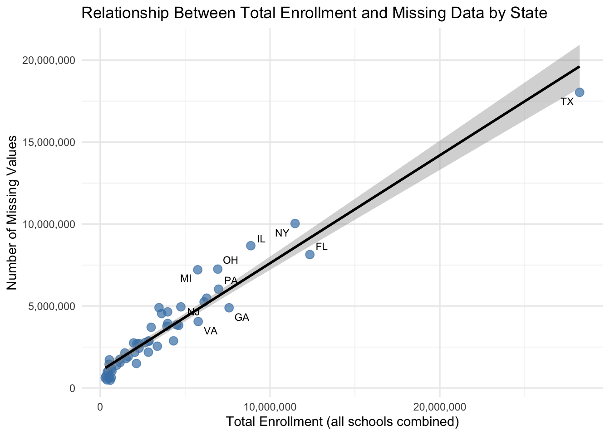

library(readxl)library(dplyr)# 1. Read the Excel file into a *data frame*df <-read_excel("./data/2020-2021/CRDC_2020-21_AK.xlsx", sheet =1)# 2. Filter to the relevant columnsdf_filtered <- df |>select(# ID/context columns if they existany_of(c("LEA_STATE", "LEAID", "SCH_ID", "SCH_NAME")),# total enrollment by genderany_of(c("TOT_ENR_M", "TOT_ENR_F")),# race-specific enrollment: SCH_ENR_[RACE]_[M/F]matches("^SCH_ENR_.*_[MF]$"),# discipline: in-school + out-of-school suspensionsmatches("^SCH_(DISCWODIS|DISCWDIS)_"),# expulsion / alternative placementsmatches("^SCH_(DISCWODIS|DISCWDIS)_(EXP|EXPEL|ALT|ALTR)_"),# law enforcement: referrals + arrestsmatches("^SCH_(DISCWODIS|DISCWDIS)_(REF|ARR)_") )
https://civilrightsdata.ed.gov/view
The data that I obtained was from the Civil Rights Data Collection owned and maintained by the U.S Department of Education. All public schools K-12, across the 50 states, including charter schools self-report this data. The file format for the 2020-2021 time frame was mainly available in .xlsx format. I focused my analysis on the school 2020–2021 year; the files were primarily available in .xlsx format, which I accessed via a publicly available API, downloading them separately for each U.S. state via a python script.
For this project I used a subset of the columns that were available in this data set including TOT_ENR_M, TOT_ENR_F which represented total student counts faceted by gender. There was also more race specific faceting represented by the ‘RACE’ and ‘M/F’. I then used fields that represented disciplinary measures, SCH_DISCWODIS_* and SCH_DISCWDIS_*, for in school and out of school suspensions. For “pipeline” outcomes I pulled expulsion and alternative placement counts with columns that contained the patterns of EXP|EXPEL|ALT|ALTR and law-enforcement contact referrals and arrests with the patterns of REF and ARR; all of which were also faceted by race and gender. These patterns and definitions come from the U.S. Dept. of Ed’s Civil Rights Data Collection codebooks.
The data regarding election results for the 2020 election was obtained from the Federal Elections Commission website, an official website of the United States government.
library(dplyr)library(stringr)library(ggplot2)library(viridis) # for viridis color scale, optional# ID-like columns we do NOT want to treat as data fieldsid_cols <-c("state", "source_file", "SCHID", "NCESSCH", "LEAID", "LEA_STATE")id_cols <-intersect(id_cols, names(crdc_raw))# All data columns that may contain missing valuesdata_cols <-setdiff(names(crdc_raw), id_cols)missing_by_state <- crdc_raw |>group_by(state) |>summarise(missing_count =sum(is.na(across(all_of(data_cols)))),total_cells =sum(length(data_cols)),.groups ="drop" ) |>arrange(desc(missing_count))missing_by_state
# A tibble: 52 × 3
state missing_count total_cells
<chr> <int> <int>
1 CA 17574461 3462
2 TX 15309152 3462
3 NY 8482950 3462
4 IL 7284956 3462
5 AZ 6991934 3462
6 FL 6907553 3462
7 OH 6148898 3462
8 MI 6075222 3462
9 PA 5115624 3462
10 NC 4656149 3462
# ℹ 42 more rows
Code
ggplot(missing_by_state,aes(x =reorder(state, missing_count), y = missing_count)) +geom_col(fill ="steelblue") +coord_flip() +labs(title ="Missing Value Count per State in Raw CRDC Data",x ="State",y ="Number of Missing Values" ) +theme_minimal()
This bar graph shows where the gaps in the data are; we can see that California and Texas as missing some or all of the data. Missing data was often represented as negative numbers or blank strings in this dataset and was accounted for during the data analysis. In addition the widespread absence of California’s data is evident in the choropleth maps throughout the results section. The states’ incomplete data highlights an important limitation of the CRDC dataset that inconsistencies or incomplete reporting could affect nationwide comparisons.
Code
library(dplyr)# ID-like columns we don't treat as data fieldsid_cols <-c("state", "source_file", "SCHID", "NCESSCH", "LEAID", "LEA_STATE")id_cols <-intersect(id_cols, names(crdc_raw))data_cols <-setdiff(names(crdc_raw), id_cols)# All enrollment columns (you can narrow this if you want)enr_cols <-grep("ENR", names(crdc_raw), value =TRUE)state_missing_enroll <- crdc_raw %>%# 1) make enrollment numericmutate(across(all_of(enr_cols), ~suppressWarnings(as.numeric(.))) ) %>%# 2) treat negative enrollment codes as missingmutate(across(all_of(enr_cols), ~ifelse(. <0, NA, .)) ) %>%# 3) compute enrollment per school (row)mutate(enrollment_row =rowSums(across(all_of(enr_cols)), na.rm =TRUE) ) %>%group_by(state) %>%# 4) sum enrollment + count NAs across data columnssummarise(total_enrollment =sum(enrollment_row, na.rm =TRUE),missing_count =sum(is.na(across(all_of(data_cols)))),.groups ="drop" ) %>%# just in case some weird state has no enrollment at allfilter(total_enrollment >0)state_missing_enroll
# A tibble: 50 × 3
state total_enrollment missing_count
<chr> <dbl> <int>
1 AK 490579 1020268
2 AL 2849395 2869138
3 AR 2040355 2180517
4 CO 3975478 3934986
5 CT 2291741 2427903
6 DC 406474 496695
7 DE 598137 477807
8 FL 12346106 8137955
9 GA 7590879 4893978
10 HI 550006 606409
# ℹ 40 more rows
Code
library(ggplot2)library(scales)library(ggrepel)ggplot(state_missing_enroll,aes(x = total_enrollment, y = missing_count)) +geom_point(size =3, alpha =0.7, color ="steelblue") +geom_smooth(method ="lm", se =TRUE, color ="black") +geom_text_repel(aes(label = state),size =3,max.overlaps =5, # increase if labels still get droppedbox.padding =0.25,point.padding =0.2 ) +scale_x_continuous(labels = comma) +scale_y_continuous(labels = comma) +labs(title ="Relationship Between Total Enrollment and Missing Data by State",x ="Total Enrollment (all schools combined)",y ="Number of Missing Values" ) +theme_minimal()

This figure shows a clear positive relationship between a state’s total student enrollment and the number of missing values in its raw CRDC file. States with more students also tend to have more missing entries. This relationship feels logical, the more data associated with the state the more likey is it to have holes in the data.